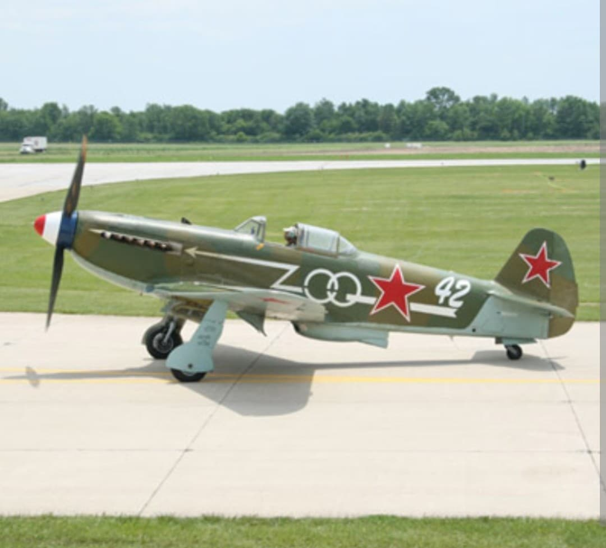
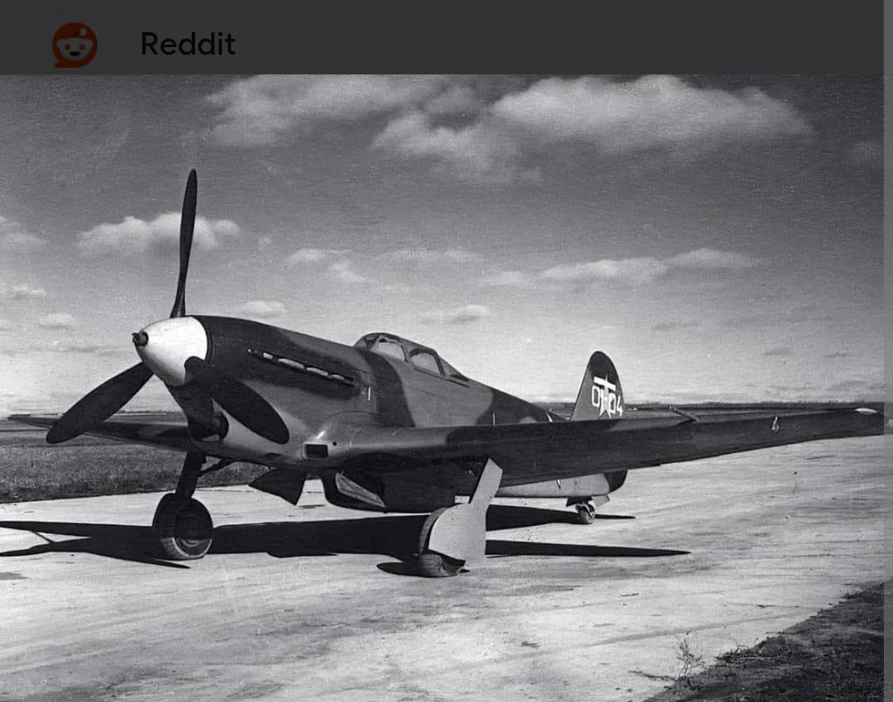
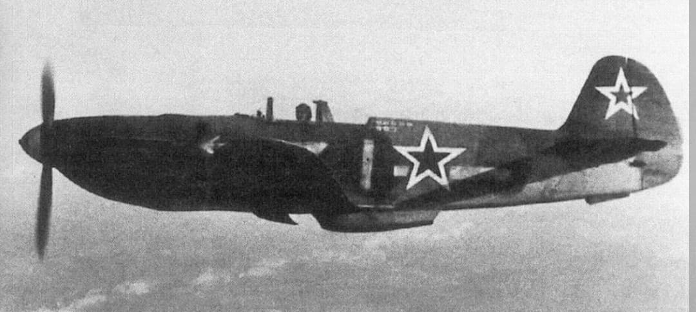

Produit à plus de 16 000 exemplaires : le fer de lance modulable de l'Armée de l'air soviétique

Le Yakovlev Yak-9 est un avion de chasse monoplace soviétique développé à partir du Yak-7 et mis en service à la fin de l'année 1942, lors de la bataille de Stalingrad. Avec 16 769 exemplaires fabriqués jusqu'en 1948, il détient le record de production de tous les chasseurs conçus par l'Union soviétique durant la Seconde Guerre mondiale.
Remarquable par son ossature métallique en duralumin (rendue possible par la réouverture des usines d'aluminium dans l'Oural), le Yak-9 se distinguait par une polyvalence exceptionnelle. Il a été décliné en une multitude de versions tactiques : chasseur d'interception, chasseur-bombardier, avion de reconnaissance, chasseur à long rayon d'action et tueur de chars lourdement armé.
Spécifications de référence du Yakovlev Yak-9 (version standard Yak-9T) :

Grâce à sa cellule modulaire et robuste, le Yak-9 a été décliné en plusieurs variantes clés adaptées aux besoins changeants de l'Armée rouge :

Déployé lors des grandes batailles de la seconde moitié de la guerre (Stalingrad, Koursk, Opération Bagration et la bataille de Berlin), le Yak-9 a permis d'asseoir définitivement la supériorité aérienne soviétique sur la Luftwaffe.
Il a également été largement utilisé par les pilotes du régiment français Normandie-Niémen avant leur passage sur Yak-3, ainsi que par les unités polonaises et de la Yougoslavie libre. Sa facilité de pilotage et sa tolérance aux terrains d'aviation rudimentaires en ont fait le compagnon idéal des unités du front.
Page du Musée HOP WW2 – Yakovlev Yak-9